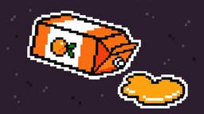

Socket
フィード
Socket Joins New OpenJS Program to Fund Node.js Security Work
Socket
Socket is joining the OpenJS Security Stewardship Program to fund Node.js vulnerability research, maintainer remediation, and security releases.
20時間前

Re-Enabled GitHub Actions Expose Thousands of Repositories to Mini Shai-Hulud
Socket
Two compromised GitHub Actions were re-enabled with malicious tags intact, exposing thousands of downstream repositories to Mini Shai-Hulud.
2日前
Malicious Firefox Extension Poses as PDF Identity Verifier to Hijack Google Accounts
Socket
A malicious Firefox extension fetches its payload after installation to evade detection, steal Google session cookies, and automate account takeover.
3日前

MemTensor npm and PyPI Packages Compromised in Credential-Stealing Supply Chain Attack
Socket
The compromise affects MemTensor's MemOS, an open source memory framework for large language models (LLMs) and AI agents. Both npm package @memtensor/memos-cloud-openclaw-plugin and the PyPI package MemoryOS are compromised. They drop cross-platform Go binaries that exfiltrate developer secrets.
3日前

Lovable’s OJ Rewrites Vite’s Dev Server in Rust as AI Lowers the Cost of Forking Open Source 1
1
Socket
Lovable’s OJ rewrites Vite’s dev server in Rust, reducing memory use and preview times as AI lowers the cost of open source reimplementation.
4日前

Happy Birthday, Shai-Hulud
Socket
It has been one year since Shai-Hulud made its first appearance on npm.
8日前

PolinRider Spreads Through Compromised GitHub Accounts and Packagist
Socket
Operators behind PolinRider used a compromised GitHub account to plant malware in four development versions of a Packagist package with 700,000+ downloads.
9日前
GitHub Actions Adds cache-mode to Limit Cache Poisoning Risk
Socket
GitHub Actions now supports cache-mode, a least-privilege control on the Actions cache aimed at the cache poisoning technique behind recent compromises.
10日前
Twitch Browser Extension Exposes 30,000 Users’ OAuth Tokens to Russian Bot Service
Socket
A Twitch browser extension on Chrome and Firefox forwards users’ live OAuth session tokens through proxies controlled by a Russian bot service.
15日前